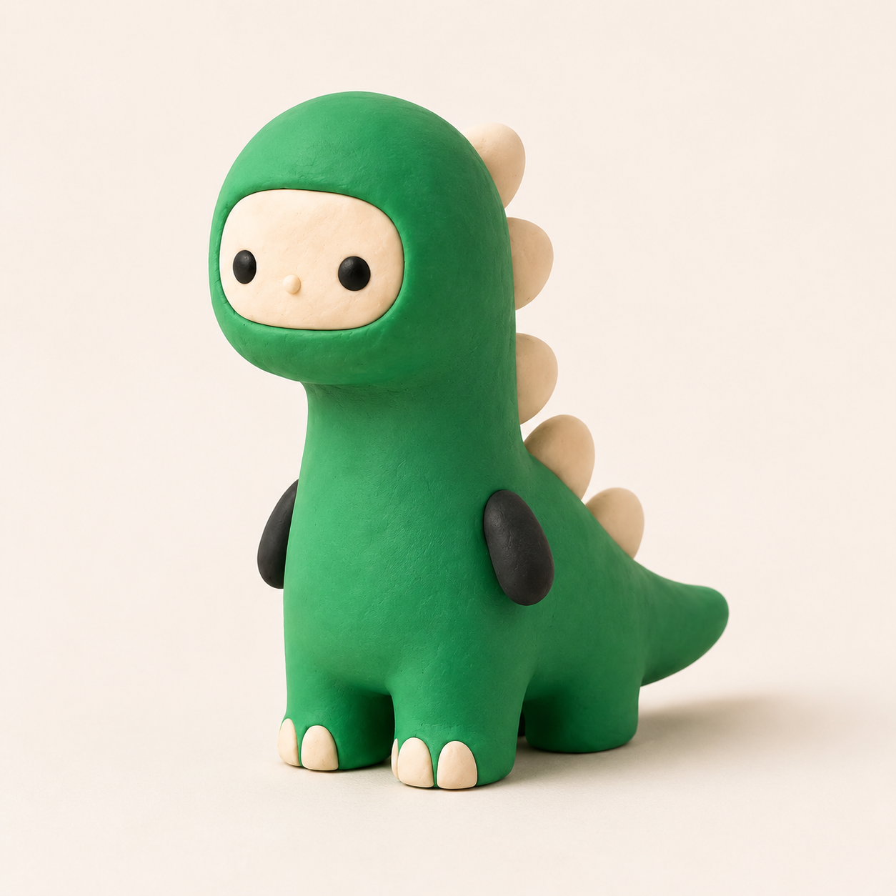

O valor de continuar curioso

Curiosidade não é saber tudo. É perceber que ainda existe algo para descobrir. Ela aparece quando paramos por um instante e fazemos a pergunta que parecia simples demais para ser feita.
No trabalho criativo, é fácil procurar respostas prontas. Mas uma referência só ganha valor quando deixa de ser destino e vira ponto de partida. O que chamou sua atenção? Por que aquilo funciona? O que aconteceria se você removesse metade?
Uma boa pergunta abre mais caminhos do que uma resposta perfeita.
Deixar espaço para a ideia
O excesso costuma esconder o essencial. Menos elementos não significam menos personalidade; significam mais espaço para cada escolha respirar. É por isso que gostamos de páginas calmas, textos diretos e detalhes que aparecem no tempo certo.
Continuar curioso é aceitar que o primeiro rascunho não precisa ter razão. Ele só precisa começar a conversa.